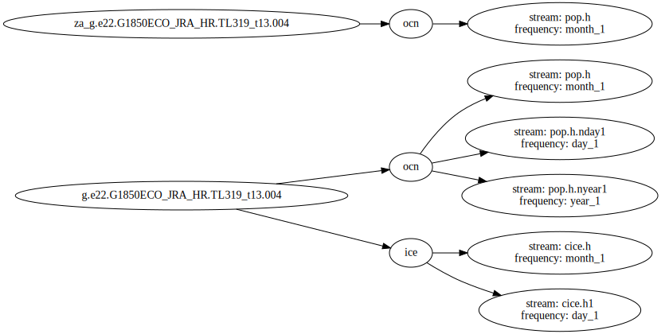

Case Overview¶
import pandas as pd
from graphviz import Digraph
df = pd.read_csv('../data/hires_catalog.csv')
# Create Digraph object - use the left to right orientation instead of vertical
dot = Digraph(graph_attr={'rankdir': 'LR'})
# Save the catalog as a pdf
dot.format = 'pdf'
# Start counting at one for node numbers
num_node = 1
# Loop through the different cases
for case in df.case.unique():
case_i = num_node
dot.node(str(case_i), label=case)
num_node += 1
# Loop through the different components in each case
for component in df.loc[df.case == case].component.unique():
comp_i = num_node
dot.node(str(comp_i), label=component)
dot.edge(str(case_i), str(comp_i))
num_node += 1
# Loop through the frequency in each component within each experiment
for frequency in df.loc[(df.case == case) & (df.component == component)].frequency.unique():
freq_i = num_node
# Pull out the the stream information
stream = df.loc[
(df.case == case) & (df.component == component) & (df.frequency == frequency)
].stream.values[0]
# Add both stream and frequency information to these bubbles
dot.node(str(freq_i), label=f'stream: {stream} \n frequency: {frequency}')
dot.edge(str(comp_i), str(freq_i))
num_node += 1
comp_i += 1
case_i += 1
dot

df
| component | stream | case | member_id | variable | start_time | end_time | time_range | long_name | units | vertical_levels | frequency | path | |
|---|---|---|---|---|---|---|---|---|---|---|---|---|---|
| 0 | ocn | pop.h | g.e22.G1850ECO_JRA_HR.TL319_t13.004 | 4.0 | VVEL | 0022-01 | 0022-12 | 002201-002212 | Velocity in grid-y direction | centimeter/s | 1.0 | month_1 | /glade/campaign/cesm/development/bgcwg/project... |
| 1 | ocn | pop.h | g.e22.G1850ECO_JRA_HR.TL319_t13.004 | 4.0 | Jint_100m_ALK_ALT_CO2 | 0003-01 | 0003-12 | 000301-000312 | Alkalinity, Alternative CO2 Source Sink Term V... | meq/m^3 cm/s | 1.0 | month_1 | /glade/campaign/cesm/development/bgcwg/project... |
| 2 | ocn | pop.h | g.e22.G1850ECO_JRA_HR.TL319_t13.004 | 4.0 | POC_PROD | 0011-01 | 0011-12 | 001101-001112 | POC Production | mmol/m^3/s | 1.0 | month_1 | /glade/campaign/cesm/development/bgcwg/project... |
| 3 | ocn | pop.h | g.e22.G1850ECO_JRA_HR.TL319_t13.004 | 4.0 | ALK_ALT_CO2 | 0033-01 | 0033-12 | 003301-003312 | Alkalinity, Alternative CO2 | meq/m^3 | 1.0 | month_1 | /glade/campaign/cesm/development/bgcwg/project... |
| 4 | ocn | pop.h | g.e22.G1850ECO_JRA_HR.TL319_t13.004 | 4.0 | CaCO3_PROD | 0029-01 | 0029-12 | 002901-002912 | CaCO3 Production | mmol/m^3/s | 1.0 | month_1 | /glade/campaign/cesm/development/bgcwg/project... |
| ... | ... | ... | ... | ... | ... | ... | ... | ... | ... | ... | ... | ... | ... |
| 16023 | ice | cice.h1 | g.e22.G1850ECO_JRA_HR.TL319_t13.004 | 4.0 | dvidtd_d | 0029-01-01 | 0029-12-31 | 00290101-00291231 | volume tendency dynamics | cm/day | 1.0 | day_1 | /glade/campaign/cesm/development/bgcwg/project... |
| 16024 | ice | cice.h1 | g.e22.G1850ECO_JRA_HR.TL319_t13.004 | 4.0 | hi_d | 0007-01-01 | 0007-12-31 | 00070101-00071231 | grid cell mean ice thickness | m | 1.0 | day_1 | /glade/campaign/cesm/development/bgcwg/project... |
| 16025 | ice | cice.h1 | g.e22.G1850ECO_JRA_HR.TL319_t13.004 | 4.0 | hi_d | 0034-01-01 | 0034-12-31 | 00340101-00341231 | grid cell mean ice thickness | m | 1.0 | day_1 | /glade/campaign/cesm/development/bgcwg/project... |
| 16026 | ice | cice.h1 | g.e22.G1850ECO_JRA_HR.TL319_t13.004 | 4.0 | dvidtt_d | 0034-01-01 | 0034-12-31 | 00340101-00341231 | volume tendency thermo | cm/day | 1.0 | day_1 | /glade/campaign/cesm/development/bgcwg/project... |
| 16027 | ice | cice.h1 | g.e22.G1850ECO_JRA_HR.TL319_t13.004 | 4.0 | dvidtt_d | 0031-01-01 | 0031-12-31 | 00310101-00311231 | volume tendency thermo | cm/day | 1.0 | day_1 | /glade/campaign/cesm/development/bgcwg/project... |
16028 rows × 13 columns